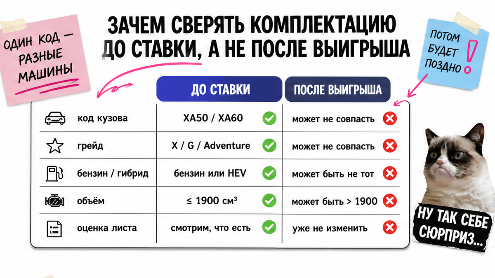
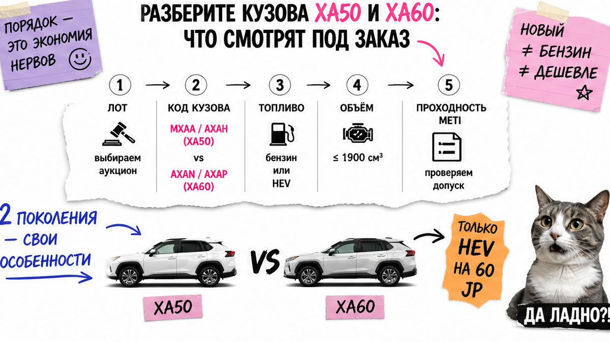
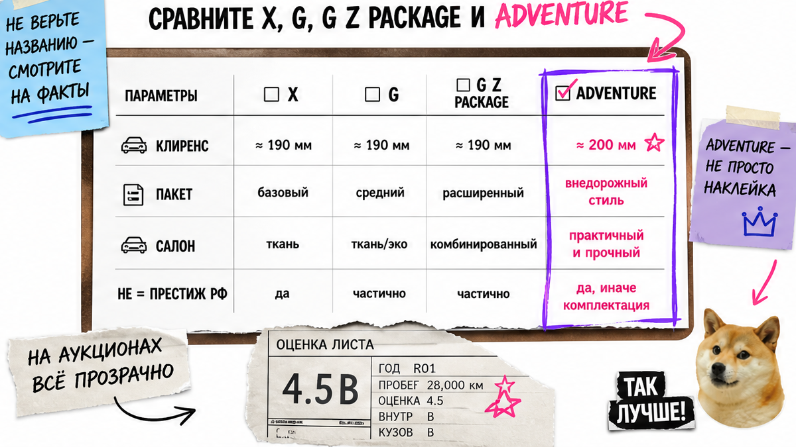

Семья уже мысленно делит бюджет под "Adventure с полной комплектацией" как на фото дилера, а в японском листе вдруг Hybrid или свежий кузов 2026. Типичная ошибка – путать Комфорт/Престиж РФ с грейдами X/G/Adventure и ставить депозит до сверки. Ниже – чек-лист до ставки: кузов, грейд, мотор, проходность и карта листа. После него вы сами скажете "проходной / непроходной / нужна сверка" и не отдадите деньги вслепую.
Инсайт до ставки: Японский RAV4 читают по коду кузова, грейду и объёму/топливу, а не по словам "Престиж" и "полная комплектация". Бензин ~1986 см³ и full hybrid/PHEV из Японии с 09.08.2023 для РФ – стоп до сверки. Новый XA60 в Японии без бензина (только HEV/PHEV). Сначала 12 пунктов чек-листа, потом ставка или отказ.
Мы во Владивостоке часто останавливаем руку над кнопкой ставки. Красивый лот с оценкой 4.5 ещё не значит, что машину вывезут и она совпадёт с картинкой из российского каталога. На практике спасает короткий ритуал: выписать код кузова и грейд, проверить мотор, прочитать карту повреждений – и только потом думать о деньгах. Если торопит "лот уйдёт через минуту" без листа – это уже красный флаг, а не удача.

После выигрыша торг слабый: депозит ушёл, а "не тот" мотор или грейд всплывает поздно. Например, в заголовке Adventure, а на фото нет арок и обвеса – это стоп, а не "разберёмся потом".
Аукционный лист – лист осмотра с японского аукциона: оценка, схема повреждений, блок опций. Грейд – короткое имя комплектации в Японии (X, G, Adventure). Это не "Комфорт" и не "Престиж" с витрины РФ. Путаница этих языков – главная боль новичка в теме тойота рав 4 комплектации.
Делайте: до ставки выпишите год, код кузова, грейд, объём см³, топливо и привод. Не делайте: платить депозит "чтобы не упустили", пока нет вердикта по проходности.
Схема до ставки:
Карточка лота → Код кузова + грейд → Объём/топливо → Оценка + карта A/U/B/W/XX → Фото опций → Ставка или отказ

Пятое поколение (XA50) на аукционах часто с кодами MXAA54 (бензин) и AXAH54 (гибрид). Шестое (XA60) в японской линейке с конца 2025 – Adventure / Z / GR SPORT и по релизам Toyota только HEV/PHEV, без привычного бензина "как раньше для семьи".
Сюрприз: японский бензин 2.0 в листе часто ~1986 см³. Порог правил экспорта в Россию с 9 августа 2023 – 1900 см³; отдельно закрыты full hybrid, PHEV и электро. "Новый RAV4 2026 с аукциона" почти наверняка непроходной в сценарии Япония → РФ, даже если видна цена. Агрегатор может честно писать "запрещён к экспорту" – читайте это как стоп, а не как мелкий шрифт.
| Что видите | Поколение | Сигнал в листе | До ставки |
|---|---|---|---|
| MXAA54, ~1986 см³ | XA50 | бензин 2.0 | Сверка: объём выше 1900 см³ |
| AXAH54 / Hybrid | XA50 hybrid | ~2487, hybrid | Стоп; другой канал или модель |
| AXAN64 / AXAP64 | XA60 | HEV / PHEV | Непроходной для прямого вывоза |
| Комфорт/Престиж РФ | не код листа | нет в JP-листе | Искать grade + код кузова |
Делайте: сначала поколение по коду, потом мечты про салон. Не делайте: ждать бензиновый XA60 прямо с японского аукциона – в JP-линейке его нет.

На XA50 чаще X (база), G, G Z Package и Adventure (обвес, другой характер). На XA60 имена другие: Adventure / Z / GR SPORT – это уже не X/G. Ориентир простой: имя грейда берёте из листа, а "статусность" проверяете фото и опциями.
Типичная ошибка – искать в листе "Престиж" или верить фразе "полная комплектация". В листе смотрите опции: люк (SR), NAVI, камеры, кожа, электросиденья. Нет фото ключевой опции – пауза. Например, лот назван Adventure, а визуально обычный G: сверьте grade и фото, при расхождении не ставьте.
Делайте: сопоставьте grade с фото и опциями. Не делайте: покупать "максималку" по плашке агрегатора.
Гибрид "из Японии под ключ" с 09.08.2023 упирается в запрет экспорта в РФ для авто свыше 1900 см³ и для hybrid/PHEV/EV. В реальном проекте семьи это выглядит так: красивый AXAH54 уплывает с торгов, а потом выясняется, что вывоз закрыт. Деньги и нервы уже потрачены – хотя стоп можно было поставить на первом экране карточки.
Делайте: фильтр проходности раньше влюблённости в цвет. Не делайте: ставить на Hybrid/AXAH/AXAN "авось пройдёт".
Оценка 4.5 при пробеге до ~100 тыс. км – ориентир, не идеал. Цифра без карты почти ничего не говорит. На практике: A/U/B – царапины и вмятины; W – перекрас; X/XX – замена. Текст про ремонтную историю или одометр – красный флаг.
Проблема новичка – смотреть только оценку и пробег. Добавьте комментарий инспектора, совпадение опций с фото и отсутствие W/XX на силовых без объяснения. Используйте лист как карту рисков, а не как "оценка значит всё хорошо".
Делайте: решение по связке оценка + карта + пробег + грейд. Не делайте: верить одной цифре 4.5 как гарантии.
Первый результат сегодня – без депозита и без команды "специалистов на стороне". Сохраните список и пройдите сверху вниз: так вы получите ясный вердикт по лоту за четверть часа.
Сомнения по мотору или грейду – в Telegram avtosales125 до любых денег. Расчёт и варианты – в каталоге avto-sales125.ru. Форм на странице нет.
Делайте: идите по чеклисту сверху вниз. Не делайте: пропускать проходность ради "редкого цвета".
Критерий результата: вы открываете лот RAV4 и без переводчика называете кузов и грейд, говорите "проходной / непроходной / нужна сверка" и не платите депозит до этой сверки. Отсекли сегодня Hybrid или XA60 HEV – уже не в ловушке маркетинга. Сможете повторить этот разбор на следующем лоте – навык закреплён.
Отзывы – на 2GIS Авто-Сейлс. Офис: Владивосток, Днепровская 40а, стр. 4.
Материал проверен: редакция Авто-Сейлс (эксперты по авто под заказ из Японии, Кореи и Китая).
Сверка фактов: релизы Toyota Global Newsroom по RAV4 2025–2026, материалы METI о запрете экспорта авто в РФ с 09.08.2023 (порог 1900 см³, hybrid/PHEV/EV), гайды по аукционному листу и практика заказов через Владивосток. Расчёты – только в каталоге.
На XA50 Adventure – грейд с другим внешним характером, G – более "городской". Сверьте grade, фото и опции. При расхождении названия и картинки – не ставьте.
В сценарии японский аукцион → РФ full hybrid и PHEV считайте непроходными с 09.08.2023. Не ставьте "на удачу". Гибрид принципиален – обсудите другой рынок до депозита.
Проверьте код кузова, грейд, объём, топливо, оценку, карту A/U/B/W/XX и фото опций. Сможете назвать вердикт проходности – только потом ставка. Нет листа – нет ставки.
Семьи ищут понятный бензиновый правый руль – логика XA50, не JP XA60 без бензина. Выберите шорт-лист по коду и проходности, а не по рекламному "2026 максималка".
Престиж и Комфорт – язык дилера РФ. В Японии: X, G, G Z Package, Adventure или Adventure/Z/GR на XA60. Ищите grade + опции, иначе ошибка дорого обходится.
Нет, это ориентир. Избегайте решения по одной цифре: читайте карту, пробег и комментарий инспектора. W/XX на силовых – отказ или сверка.